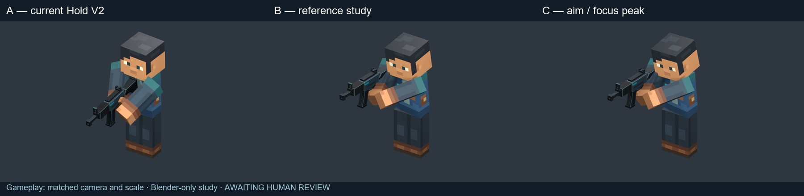
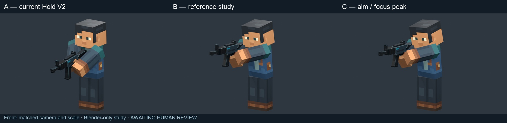
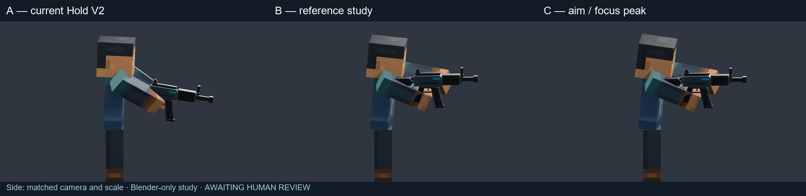
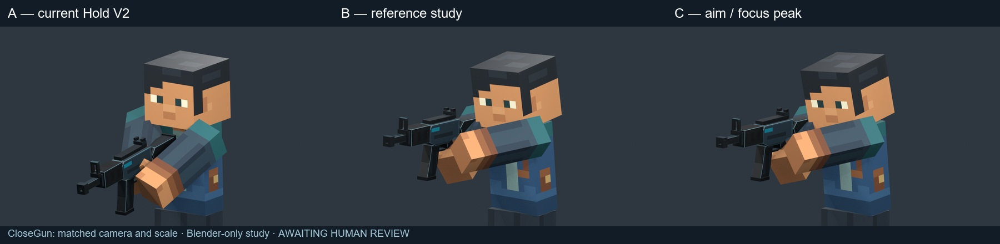
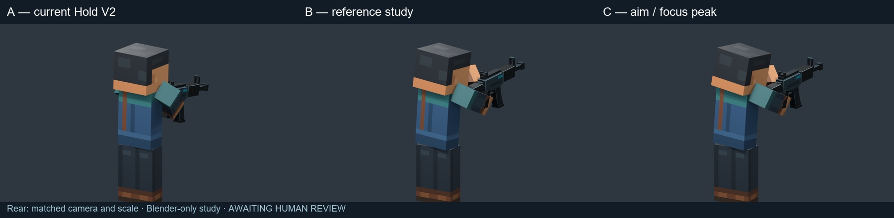
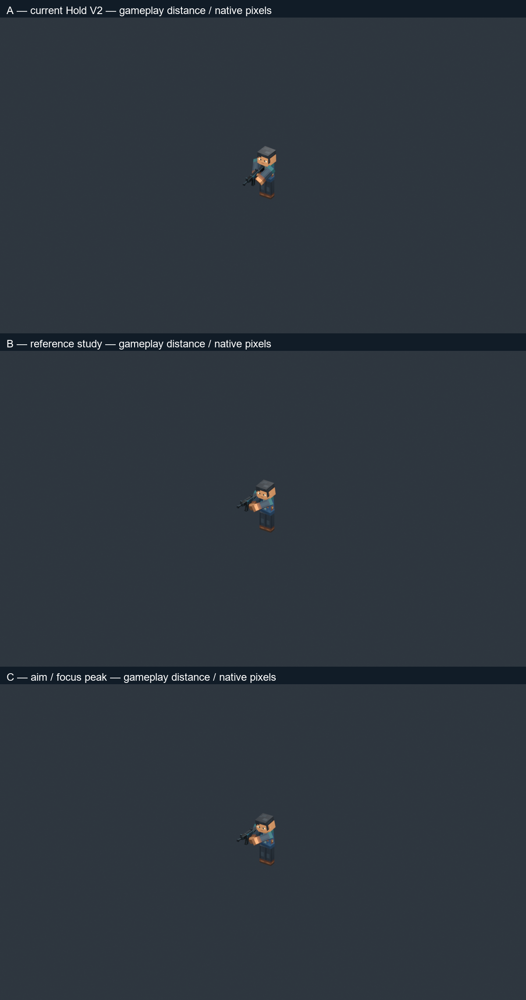

ARTISTIC STATUS: AWAITING HUMAN REVIEW. Blender-only study on the current rigid-arm rig. A: approved hold. B: new braced hold. C: small focus/emphasis/settle sequence.
Full artistic report and recommendation · Preservation and pose measurements · Contact/overlap evidence
2 seconds, 24 FPS / 1.0×. Frame1 ready; 15 focus; 20 tiny emphasis; 43 settled. This is not a recoil or firing system.






The first reference shows a compact bent-arm silhouette. Perspective and images do not establish the source rig or exact joint angles. All originals are retained; no reference content was regenerated.